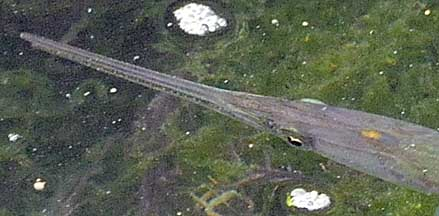
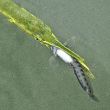
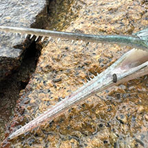
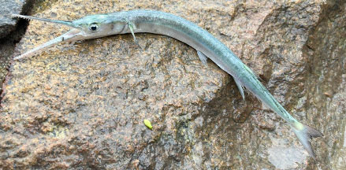
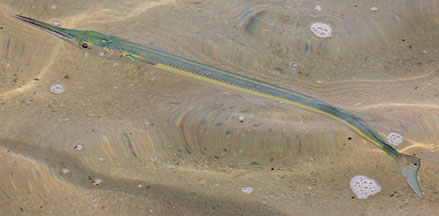
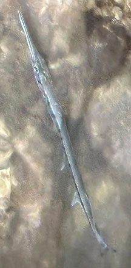

|
|
| fishes text index | photo index |
| Phylum Chordata > Subphylum Vertebrate > fishes |
| Needlefishes Family Belonidae updated Sep 2020 Where seen? These long stick-like fishes with pointed jaws are sometimes seen near mangroves as well as reef flats. Some may even be found upstream in freshwater. During the day, larger ones are sometimes seen at jetties in small groups. What are needlefishes? Needlefishes belong to the Family Belonidae. According to FishBase: the family has 10 genera and 34 species. Besides marine species, some species are found in freshwater. Features: 50cm-1m long or more, these fishes have a long silvery body. In some, the cross-section of the body is circular, in others rectangular. They usually have a dark blue stripe along the body length, and the tip of the lower jaw may be red or orange. They have long, narrow pointed jaws that are beak- or needle-like, thus their common name. 'Belone' means 'needle' in Greek. These slender jaws are usually filled with sharp needle-like teeth. The jaws are shorter in juveniles, elongating as they age. Has one single dorsal fin. Sometimes mistaken for halfbeaks. Halfbeaks are generally shorter and only their lower jaw is elongated while the upper jaw is very short. In needlefishes, both the upper and lower jaws are of equal length and usually filled with sharp teeth. Here's more on how to tell apart stick-like fishes commonly seen on our shores. |
 Chek Jawa, Nov 09 |
 Chek Jawa, Nov 09 |
| Camouflage in the open: Like other fishes that live near the water surface, they are usually
darker coloured from above, and silvery from below. Thus they are
camouflaged from predators both above and below the water. Jumping Needles: These fishes tend to skitter or make shallow leaps out at the water surface. They appear to be attracted to lights at night and there are stories of these fishes leaping into fishermen's boats at night. Occasionally, there are reports of people accidentally being killed by the spear-like jaws of these leaping fishes. What do they eat? These surface-dwelling fishes hunt small surface-dwelling fishes, catching these with a sideway movement of their jaws. They in turn are hunted by larger fishes including dolphins. |
 |
| Baby needlefishes: Their eggs
have entangling tendrils so the eggs cling to one another or to objects
in the water. Juveniles of some species shelter in mangroves, moving
out to deeper waters when they mature. Human uses: In some places, they are caught for eating. Although the flesh is said to taste good, the fishes have many small bones which are green and thus appear rather unappetising. |
| Needlefishes on Singapore shores |
On wildsingapore
flickr
|
| Other sightings on Singapore shores |
 Chek Jawa, Oct 16 |
||
 |
 Dead fish. Marina East, Feb 26 Photo shared by Kelvin Yong on facebook. |
 St John's Island, Dec 16 Photo shared by Marcus Ng on flickr. |
 Pulau Hantu, Dec 25 Photo shared by Lon Voon Ong on facebook. |
|
| Family
Belonidae recorded for Singapore from Wee Y.C. and Peter K. L. Ng. 1994. A First Look at Biodiversity in Singapore. *from Lim, Kelvin and Jeffrey K Y Low, Guide to Common Marine Fishes of Singapore **from WORMS
|
Links
References
|